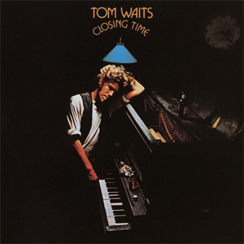
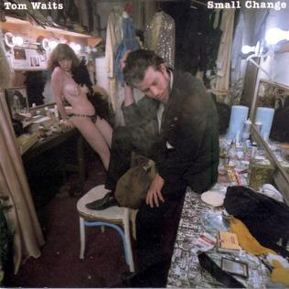
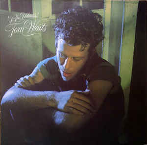

Closing Time (1973)
Released: March 6, 1973
Label: Asylum
The Heart of Saturday Night (1974)
Released: October 15, 1974
Label: Asylum

Small Change (1976)
Released: September 21, 1976
Label: Asylum
Foreign Affairs (1977)
Released: September 13, 1977
Label: Asylum

Blue Valentine (1978)
Released: September 5, 1978
Label: Asylum
Heartattack and Vine (1980)
Released: September 9, 1980
Label: Asylum
Swordfishtrombones (1983)
Released: September, 1983
Label: Island
Rain Dogs (1980)
Released: September 30, 1985
Label: Island
Franks Wild Years (1987)
Released: SeptAugust 17, 1987
Label: Island
Bone Machine (1980)
Released: September 8, 1992
Label: Asylum
The Black Rider (1993)
Released: September 1993
Label: Island
Mule Variations (1999)
Released: April 16, 1999
Label: ANTI-